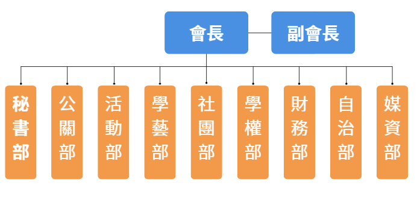
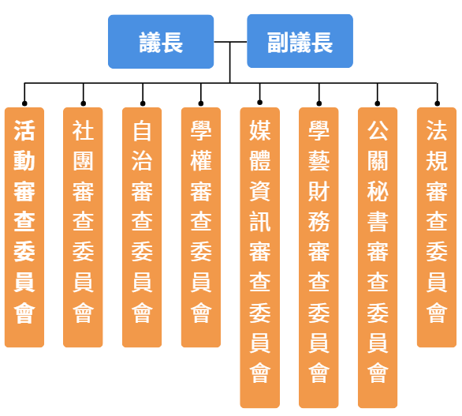
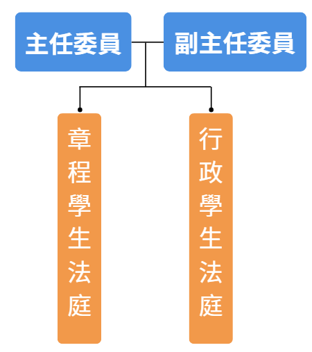

行政中心組織架構




高雄中學學生聯合會（簡稱雄中學聯會）是雄中全校學生的最高自治代表組織，秉持「自由、民主、自主」的精神，致力於深化校園民主、推動學生權益，並為全校同學打造豐富且多元的校園生活。
即一般所狹義的「學聯會」，由正副會長領導，主管整體運作並受學生議會監督。行政部門下轄秘書部、公關部、活動部、學藝部、社團部、學權部、財務部、自治部及媒資部。
行政部門作為學生與學校間的橋樑，代表學生與校方溝通，並爭取與維護學生權利。除此之外，每年也固定舉辦許多大型校園活動(例如:校慶歌唱大賽、耶誕晚會、耶誕傳情...)，同時也會發行學聯會周邊(例如:T-恤、校慶紀念物...)。
學生議會為學生自治的立法與監督機關，正副議長由學生議員內部選舉，其具有「立法權」負責修訂校園規定、「審查權」審閱學生會預算、「監督權」聽取學生會工作報告並質詢。
評議委員會為掌理學聯會司法事務的獨立機關(類似司法院)，由五名獨立行使職權之評議委員組成，並設主任委員及副主任委員各一人。委員會下設兩大法庭分工運作：
章程學生法庭：由五位委員合議審理，負責解釋自治會章程與統一解釋自治法規。
行政學生法庭：採二級二審制（分為高等與最高行政學生法庭），審理學生行政訴訟及非訟案件。
多年來，雄中學聯會不僅關注校內議題，更鼓勵同學關心公眾事務與社會趨勢，培養獨立思辨與公民素養。我們致力於建構一個開放、多元且具包容性的校園環境，讓每一位雄中人的聲音都能被聽見與實現。